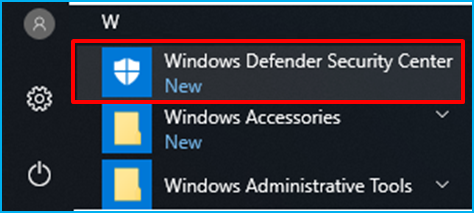
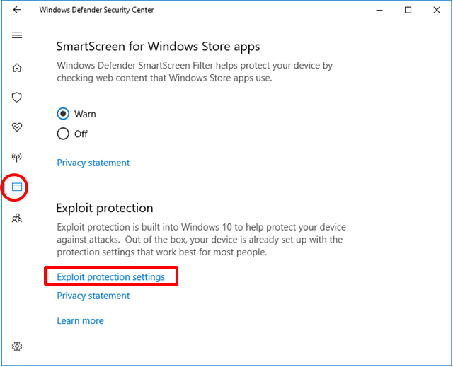
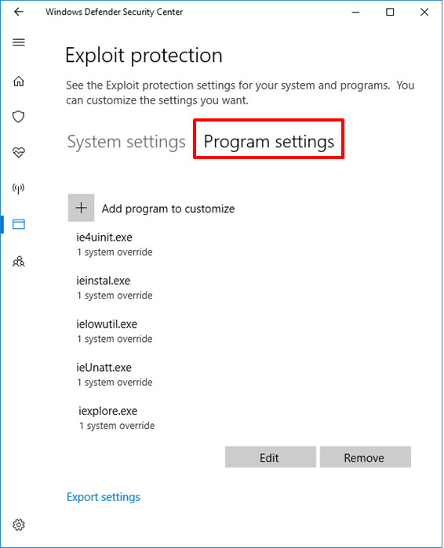
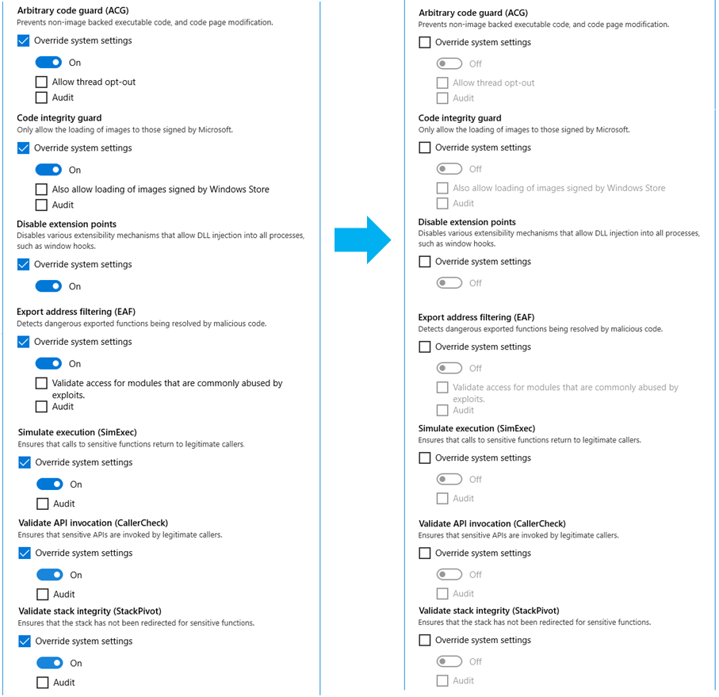

FSW is not properly functioning.
Please follow the instructions below.
Please follow the instructions below.
1. Disable the Exploit Protection feature of Windows Defender.

1) Click the Start menu and open the Windows Defender Security Center.
2) Click the App & browser control menu on the left and click Exploit protection settings.
3) Click Program Settings. For each program on the list, click the Edit button to check if any of the following options is enabled. - Arbitrary code guard (ACG) - Code integrity guard - Disable extension points - Export address filtering (EAF) - Simulate execution (SimExec) - Validate API invocation (CallerCheck) - Validate stack integrity (StackPivot)
4) For the program(s) to which the option(s) shown above is enabled, clear the checkbox of the option(s) and click the Apply button. 5) Restart your PC.